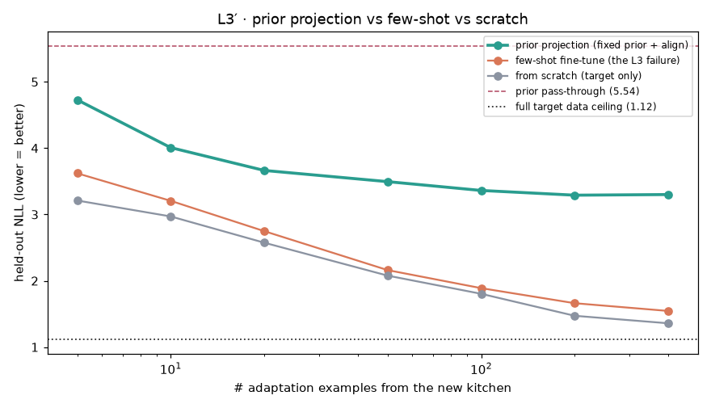
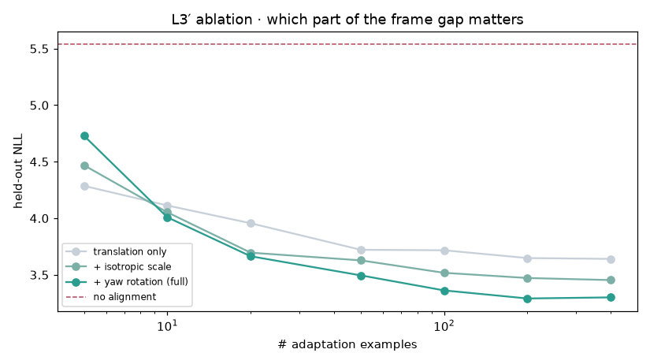

HD-EPIC-NF — 実厨房の配置NF ＋ 個人化 / ドリフト / few-shot / 介入ポリシー
実験B（−log p(位置｜厨房)）を、異常検知から個人の routine とその介入有用性まで深化（L1–L4）。
1.030Flow held-out NLL（nats・低いほど良い）
1.253GMM baseline NLL（nats）
+2.05L1 個人化ゲイン (nats)
+0.95L4 予測ポリシー効用（リアクティブ=0基準の相対効用）
要旨：実厨房の配置は多峰で、Flow の held-out NLL は GMM より低い（当てはまりが良い）（B）。そこから、
L1 習慣は個人的（“誰か”を知ると予測が改善）、L2 習慣は時間で動く/定着する、
L3 公共の事前分布から少数例で新しい人を個人化できる、L4 サプライズで事前警告する方が事後対応より得、
を示す。各図に観察と解釈（だから何が言えるか）を併記。
元データの中身（何が入っているか）
生データ＝HD-EPIC の公開注釈JSON（動画は不使用・ログイン不要）。使ったのは主に eye-gaze-priming / object-movements：物が扱われるたびに { 3D位置(x,y,z), 視線のズレ(gaze_offset), カメラからの距離(dist_to_cam), 見てから触るまでの時間(prime_gap), 厨房ID(P01…), 移動の開始/終了(phase) }。
1レコードの実例：P01 の台所で、ある物の操作開始点が (-0.11, -3.13, -0.03)、その時 gaze は物から 0.07 ずれ、カメラから 2.3m、見てから触るまで 3.5秒。
→ 学習の主対象は 物の3D位置 × 厨房(≒人)（視線ズレは『見ずに置いたか』の解釈に使用）。計 35,911 レコード。
データ / 学習（このページの前提）
| データ | HD-EPIC の公開注釈（実キッチンのエゴセントリック記録・9厨房・複数日）。動画は使わず注釈のみ（物体の3D位置・object movements・視線）を使用。 |
| 使う量 | 「実際に扱われた物」の 3D位置 (x,y,z) を厨房ごとに集める（厨房 ≒ その人の台所）。 |
| 予測対象 x | 物が扱われた 3D位置 (x, y, z) |
| 条件 c | 厨房（≒その人） |
| モデル | 条件付き Neural Spline Flow（zuko）で p(x,y,z｜厨房)。比較ベース＝GMM。 |
| スコア | SURPRISE = −log p＝「その厨房で、その場所にその物があるのはどれだけ意外か」 |
数字の読み方
- NLL（held-out）：実際の配置をどれだけ当てたか。低いほど良い（負でもOK）。差が大きいほど当てやすい。
- AUROC：異常と正常を見分ける力。0.5＝勘・1.0＝完璧。
- nats（ゲイン）：条件（誰か・時間）を足したときのNLL改善量。大きいほどその条件が効く。
リプレイ：実厨房の配置密度の上で物を滑らせ、サプライズをライブ計測
観察：物を厨房の各位置に置いたときの −log p を色で、白点＝実際の操作位置。プローブが普段の作業島（明）から外れると計器が跳ねる。
だから何が言えるか：実厨房でも『普段の置き場』は複数の島＝多峰で存在し、そこを外れた瞬間だけ驚く。＝サプライズは“場所の妥当性”を連続量として測れており、単なる外れ値フラグでなく『どれくらい変か』の勾配を持つ。
Flow と GMM の比較：密度の当てはまり と ランダム配置の検出

観察：held-out NLL は Flow 1.030 < GMM 1.253（差 0.22 nats、低いほど当てはまりが良い）。ランダム配置の検出AUROCは両者とも ~0.9825（0.5＝偶然・1＝完全）。
だから何が言えるか：厨房配置は多峰なので、単一ガウスの重ね合わせ（GMM）より Flow の方が 0.22 nats ぶん“ありえる場所”を狭く当てている。＝『実験Aで単一ガウスと同程度だった』のは題材が単峰で低次元だったからで、実データの多峰性では Flow の表現力が当てはまりに寄与する、という反省の実証。一方ランダム配置は簡単すぎて両者高く、差は密度(NLL)側にしか出ない＝評価は“難しい異常”で見るべき。
厨房ごとのサプライズ地図（多峰性）

観察：6厨房それぞれ、明るい山（低サプライズ＝定位置）が複数。白点の実操作もその島に乗る。
だから何が言えるか：人は物を1箇所でなく数箇所の“定位置”に置く。この多峰構造こそ Flow の当てはまり優位（低NLL）の要因で、『どこがその人にとって普通か』は本質的に多峰＝個人ごとに違う地図になる、という次(L1)への布石。
L1 · 個人 vs 集団：誰かを知ると配置予測はどれだけ良くなるか

観察：厨房（＝人）で条件づけたモデルは、集団一律モデルより held-out NLL が平均 2.05 nats 低い。
だから何が言えるか：＋なら“誰か”を知るだけで予測が 2.05 nats 改善＝置き場の習慣は個人ごとに違う。つまり集団基準の忘れ物検出は、その人には普通の場所を『異常』と誤警報する。個人化は任意でなく必須、という結論。
L2 · ルーチンのドリフト：早期に学んだ習慣は後日も当たるか

観察：早期データで学んだモデルを『後日（未来）』で評価すると NLL が時間無関係のランダム保留より平均 +0.27 nats 悪化（高いほど当てにくい）。
だから何が言えるか：未来ほど当てにくい＝“普通”は時間で動く（非定常）。＝静的な忘れ物検出は時間とともに陳腐化し、オンライン更新が要る。習慣が再編される＝これ自体が“忘却/学習”の時間的側面。
L3 · few-shot 転移：新しい人を“他人の事前分布”から個人化できるか

観察：対象厨房に k 例だけで適応。少数(20例)では pretrained 2.78 / scratch 2.60、多め(400例)でも 1.48 / 1.38。
だから何が言えるか（正直な逆結果）：他人で事前学習した方が全域でむしろ悪い（20例で +0.18 nats）。L1 が示した通り配置習慣は強く個人的で、しかも厨房ごとに座標系・レイアウトが違うため、他人の事前分布は“間違った prior”になる。＝moat は「他人で事前学習」ではなく、本人自身の少数データからの個人化（またはレイアウトを揃えた表現）にある、という重要な知見。naiveな転移は効かず、個人化の“正しいやり方”選択が本質。（→ 下の L3′ で処方箋「レイアウトを揃えた表現＝整列」を実データで検証した）
L3′ · prior射影：few-shotが負けた所を「固定prior＋整列」で救えるか（正直な検証）

観察：他人8厨房の固定priorに、新厨房を相似変換（平行移動＋ヨー回転＋等方スケール＝7パラメータ）で整列だけして評価（priorの重みは一切動かさない＝test-time射影）。held-out NLL は prior射影が全ショット域で scratch / few-shot に届かない（k=20：射影 3.66 / few-shot 2.75 / scratch 2.58）。ただし整列なしの prior素通し 5.54 → 射影 3.30（k=400）と、たった7パラメータで約 2.2 nats 回復。全データ学習の天井は 1.12。scratch ＜ few-shot（few-shotはL3同様むしろ不利）も再現。
だから何が言えるか（仮説は支持されず・だが境界が引けた）：「固定prior＋test-time整列なら few-shot の失敗を救える」という仮説は否定された。相似変換は座標フレーム（絶対位置・向き・スケール）は直せるが、厨房ごとの多峰な“置き場の関係構造”そのものは剛体変換で他人分布に一致させられない。一方で naive prior の悪さ（5.54）の約半分は純粋なフレームずれで、7パラメータで消せると定量化できた。残る 3.30→1.12 の 2.2 nats が還元不能な個人固有の構造＝本人データ（scratch）でしか埋まらない。＝L3の教訓を精緻化：moat は「他人事前」でも「フレーム整列」でもなく本人自身の多峰配置。test-time prior射影は“学習を省く魔法”ではなく、転移できるのはフレームだけ・関係構造は本人データが要る、という線引きが引けた。
L3′ アブレーション：フレームずれの“何”が効くか

観察：整列を「平行移動のみ → ＋等方スケール → ＋ヨー回転」と段階的に足す。回復分の大半は平行移動（k=400：平行移動 3.64 / ＋スケール 3.45 / ＋回転 3.30）。ただしk=5 では平行移動のみが full より良い（4.29 < 4.73）。
だから何が言えるか：厨房間の“フレームずれ”は主に位置の平行移動で、向き・大きさの差は小さい（実キッチンは重力整列で寸法も近いため妥当）。そしてデータが極端に少ない（5例）ときは変換の自由度を増やすほど過学習＝「少ないほど単純な整列（平行移動だけ）」が正解。適応の自由度はデータ量に合わせて絞るべき、という実務的教訓。
L4 · 予測 vs リアクティブ：サプライズで“事前に”警告する価値

観察：サプライズ閾値を動かした予測ポリシーの期待効用は最大 0.95（リアクティブ＝事後対応は 0）。最良点で at-risk の 98% を捕捉、誤警報 16%。
だから何が言えるか：効用が正＝誤警報コストを引いても“置く前に驚いて警告する”方が事後対応より得（正味 0.95）。＝サプライズは検出器の AUC でなく意思決定に効く信号で、最適閾値が『いつ介入すべきか』を与える。貢献は“異常検知”でなく介入ポリシー、というテーゼの実証。（ただし at-risk はランダムテレポート＝易しめの合成異常なので捕捉率は楽観的。要点は“予測＞リアクティブ”という意思決定の向き。）
学習曲線：Flow と GMM の比較（held-out NLL）

観察：エポックごとの検証NLLで Flow が一貫して GMM より低い（低いほど当てはまりが良い）。
だから何が言えるか：表現力の差は初期の運や過学習でなく安定した性質＝多峰配置に対する Flow の低NLLは再現的。
考察：どんなフォーマットのデータがあれば何ができるか
本実装は「3D位置＋厨房ID」が主。データの列がこう増えると、こんな学習に広がる：
- ＋視線・手ポーズの時系列（本データに gaze はあり、系列条件化が次段）→ 『よそ見して置く→後で探す』の因果に踏み込める。
- ＋その物に次に触れた時刻（放置時間） → 忘却の実ラベルができ、『低尤度な置き方＝実際に忘れやすい』を直接検証できる（本課題の核心・未達）。
- ＋物体カテゴリの明示的条件化 → 物ごとの置き場マップ（鍋はコンロ・包丁はまな板脇…）。
- ＋複数日・時刻 → 習慣のドリフト（L2で部分実証済み）。
- ＋レイアウトを揃えた座標系 → 他人の事前分布が効き few-shot 転移が可能に（L3で『他人で事前学習が逆効果』だった処方箋）。
python -m hde.report で自動生成。NF forget/mistakeシリーズBの深化版（L1–L4）。